地政学
アピアは独立サモアの首都で、政府、議会、外交、港、地域会議が集まります。ニュージーランド、豪州、米領サモア、太平洋島嶼国との関係、気候資金、海洋管理が、湾岸の行政都市で実務になります。暮らしにも届きます。
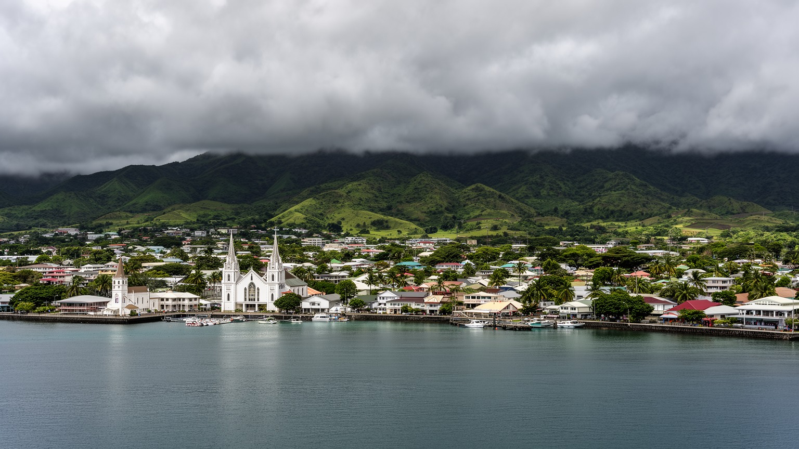
🇼🇸 サモア / ウポル島 / World City Atlas
ウポル島北岸の湾に開くサモアの首都です。港、政府機関、教会、市場、観光、ファア・サモア、海外移民の送金、低地の洪水リスクが、海辺の小さな都市に重なります。
都市の骨格
アピアは巨大な高層都市ではありません。けれども、港、政府、教会、市場、学校、ホテル、家族の土地、海外移民の送金が短い距離に重なり、サモア社会の政治と日常を最も濃く映します。
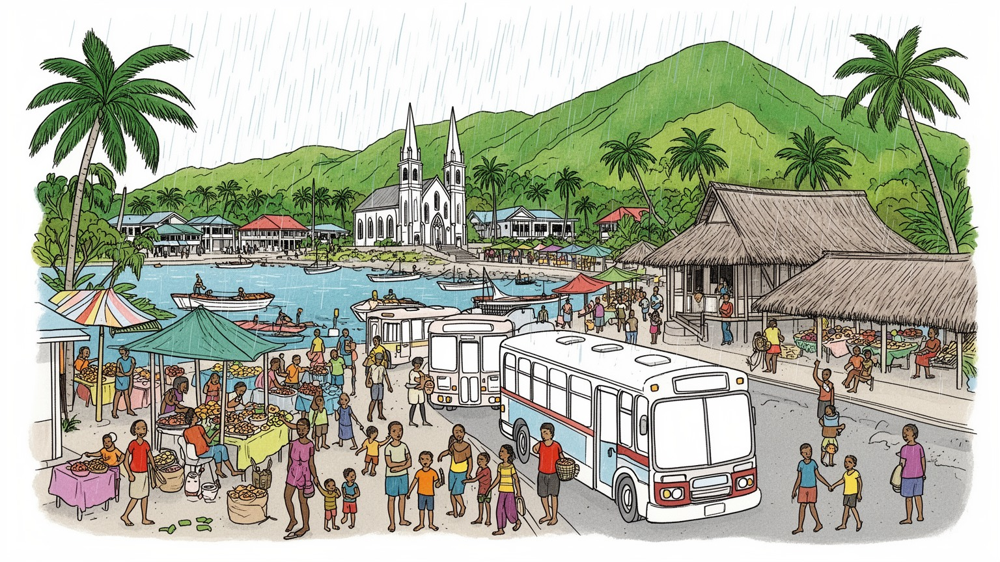
アピアは独立サモアの首都で、政府、議会、外交、港、地域会議が集まります。ニュージーランド、豪州、米領サモア、太平洋島嶼国との関係、気候資金、海洋管理が、湾岸の行政都市で実務になります。暮らしにも届きます。
行政、港湾、観光、商業、教育、医療、建設、通信、海外送金が雇用と家計を支えます。市場の売り手、ホテル従業員、港湾労働、公務員、バス運転手が、暑さと雨の中で島国経済を受け止め、朝の店先も動かします。
ファア・サモア、村の首長制、大家族、キリスト教会、合唱、日曜礼拝、タトゥー、踊りが都市の時間を整えます。ラグビーや音楽、教会の歌声も、港町の生活文化を作る大切な核になります。祝祭の夜にも響きます。
旅行者は市場、港、博物館、教会、スティーブンソンゆかりの丘、滝、海辺へ向かいます。住民は家族行事、通勤、物価、夜の海風、SNSでつながる海外家族を抱え、観光地以上の首都を生きます。店の灯りも夜に残ります。
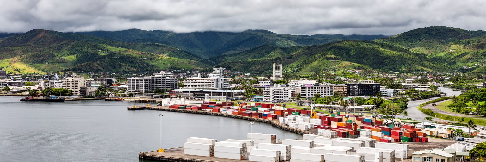
アピアの都市としての性格は、ウポル島北岸の湾と、海へ流れ込むヴァイシガノ川の低地から始まります。港に近い中心部には政府機関、商店、銀行、ホテル、市場、バスターミナルが集まり、背後の丘へ住宅と学校が広がります。海に面した便利な土地は、物流、行政、観光に向く一方、高潮、強雨、河川洪水、排水不良の影響を受けやすい場所です。サモアの首都は、広い平野を持つ大都市ではなく、村落の土地、教会、家族の敷地、自由保有地、港湾施設が細かく重なる都市です。湾岸の眺めは穏やかですが、都市計画の課題は単純ではありません。道路を広げれば村の境界や墓地、家族の土地に触れ、観光施設を整えれば海岸の利用と生活の場が変わります。アピアを読むには、港から丘へ上がる短い移動の中に、国家、村、家族、海、気候が交差していることを見る必要があります。湾は首都の入口であり、同時に島国の脆さを映す水面でもあります。雨季に水が集まる谷、海沿いの低地、港へ向かう道路、日曜に静まる中心街を結ぶと、地形がアピアの生活リズムを決めていることが分かります。小さな首都ほど、排水溝、橋、海岸緑地、歩道の整備が都市全体の安全に直結します。湾岸の美しさは、日常の管理と切り離せません。さらに、低地と丘の距離が近いことは、通勤、通学、買い物、礼拝の動線を短くしながら、冠水時には都市機能を同時に止める弱さにもなります。水辺の整備は景観ではなく、首都の生活保障です。
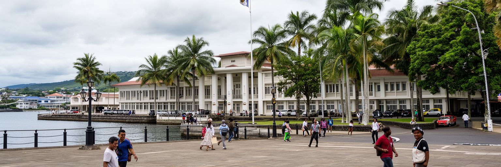
アピアはサモアの政治判断が集まる場所です。サモアは一九六二年に独立し、太平洋島嶼国の中でも早く主権国家として歩み始めました。首都には政府機関、議会、裁判所、中央銀行、大使館、国際機関の窓口があり、教育、保健、気候政策、土地、観光、港湾、海外労働、災害対応をめぐる制度が組み立てられます。政治は西洋型の議会制度だけでなく、村の首長制、家族の責任、教会、土地慣行と深く結びつきます。アピアの行政地区を歩くと、国家の書類と村の合意形成が同じ社会の中で動いていることが分かります。人口規模は小さいですが、政策の影響はウポル、サバイイ、離島、海外に暮らすサモア人へ及びます。気候変動の交渉、開発援助、労働移動、保健危機では、首都が国の声を外へ届けます。政治の安定は観光や投資にも重要ですが、住民にとっては学校、病院、道路、物価、土地利用の実感として現れます。アピアの首都性は、巨大な官庁街の威圧感ではなく、村社会の近さと国家制度の近さが同居する点にあります。政治家、役人、教会、企業、市民団体の距離が近いからこそ、決定は生活の会話にも入り込みやすいです。小さな首都では、透明性と説明責任が強く求められ、同時に親族や村の関係を無視した政策も動きにくいです。アピアの政治を読むことは、制度と慣習が毎日折り合う現場を見ることでもあります。首都の決定は、港の整備や学校予算のような形で、すぐに家族の会話へ戻ってきます。
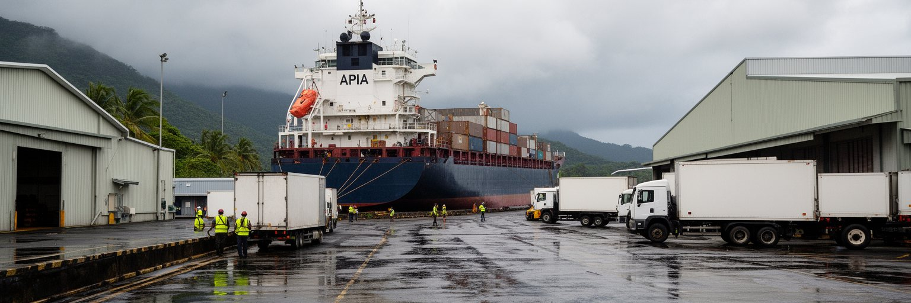
アピア港は、サモアの生活物資と外の世界を結ぶ実務の場所です。燃料、食品、建材、車両、家電、医薬品、郵便、輸出品、観光客を乗せた船が港を通り、島国の価格と供給を左右します。国内市場が小さいサモアでは、多くの品物が輸入に頼り、国際運賃、為替、燃料費、港の混雑が店頭価格に反映されやすいです。港では荷役、通関、倉庫、運転手、船舶修理、警備、清掃、事務、食堂の仕事がつながり、中心部の商業にも人の流れを作ります。観光客が見る海辺の明るさの裏側で、港湾労働者は雨、暑さ、重機、安全、夜間作業と向き合います。アピアからは米領サモアや周辺の航路、国内の移動、災害時の物資輸送も重要で、港は商業施設であると同時に公共的な生命線です。サイクロンや強い雨で港湾や道路が止まれば、食料、燃料、建設、医療に影響が出ます。港の近代化は経済成長の話に見えますが、実際には家計の安定、離島とのつながり、災害後の復旧を支える政策でもあります。アピアの港を読む時は、船の大きさだけでなく、コンテナを降ろした後の道路、税関の手続き、市場へ届く野菜、海外家族から届く荷物まで見る必要があります。港は世界経済を小さな首都の台所へ翻訳する場所であり、その翻訳の滑らかさが住民の安心を左右します。海辺の仕事は、首都の日常を支える前線です。港で働く人の安全と技能は、島全体の供給網の強さに直結しています。
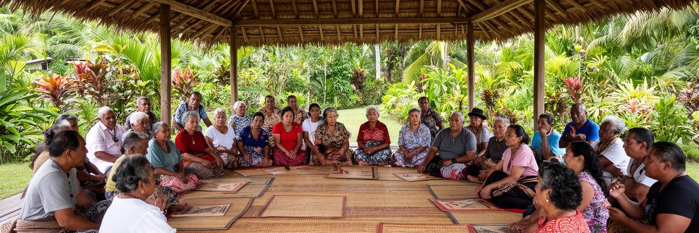
アピアを理解するには、ファア・サモアと呼ばれるサモアの生活秩序を避けて通れません。首都で働き、学校へ通い、スマートフォンを使い、海外と連絡を取りながらも、多くの人は家族、村、首長、教会、儀礼、贈与の関係の中で暮らします。ファレの開かれた空間、日曜礼拝、葬儀、結婚、首長称号、家族会議、親族への支援は、都市の日程と家計に深く関わります。アピアの中心部は商業と行政の場ですが、その背後には村ごとの土地と共同体があり、単純な市役所型の都市行政とは違う力学があります。ファア・サモアは相互扶助と尊敬の仕組みを保つ一方、若者や女性、低所得世帯に儀礼費用や家族責任の重さを感じさせることもあります。都市化が進むと、現金収入、賃金労働、学校教育、海外移住が伝統的な義務と交差し、家族の交渉は複雑になります。アピアの生活文化を美しい伝統としてだけ語ると、変化の痛みや世代間の緊張が見えなくなります。逆に近代化の障害としてだけ見れば、災害時や失業時に人を支える強い社会基盤を見落とします。首都の公共性は、国家制度と村の秩序がどこで協力し、どこで摩擦を起こすかによって形作られます。アピアの通りに見える家族の集まり、教会の白い服、村の会議は、観光的な風景ではなく都市運営の基本単位です。現代のアピアは、伝統を保存するだけでなく、伝統を交渉し直しながら動いています。
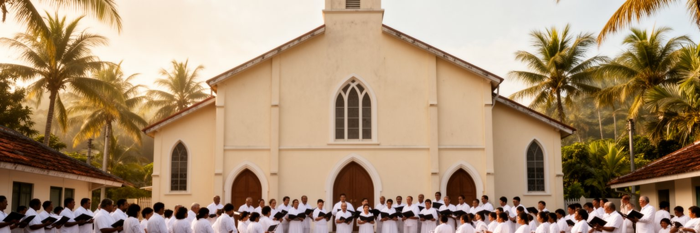
アピアの時間を最も強く区切るものの一つが教会です。キリスト教はサモア社会に深く根づき、日曜礼拝、合唱、寄付、青年会、女性会、学校、葬儀、結婚式を通じて家族と村の生活を支えます。日曜の朝、白い服で教会へ向かう人々、静かになる商店街、礼拝後の食事、歌声は、首都の日常に独特のリズムを与えます。教会は信仰の場であると同時に、福祉、教育、相互扶助、社会的な評判の場でもあります。都市で働く人にとって、教会のネットワークは仕事探しや困った時の相談先になることもあります。一方で、寄付や儀礼費用、道徳規範、性別役割への圧力が家計や個人の選択を縛る場合もあります。アピアの宗教風景を読むには、壮麗な聖堂だけでなく、住宅地の小さな礼拝堂、合唱の練習、葬儀の準備、学校と教会の関係を見る必要があります。観光客にとって教会建築は見どころですが、住民にとっては信仰と共同体の中心であり、軽い撮影対象ではありません。教会の時間は、消費と交通の速度を一度止め、家族や村の関係を確認する働きを持ちます。アピアは港と官庁の都市であると同時に、祈りが公共空間を満たす都市でもあります。日曜に街が静まる時、首都は経済活動の場所から共同体の場所へ姿を変えます。その変化を理解すると、アピアの都市生活が単なる商業や行政ではなく、信仰の暦に深く組み込まれていることが分かります。歌声は都市の騒音を一度ほどき、家族の責任を思い出させます。
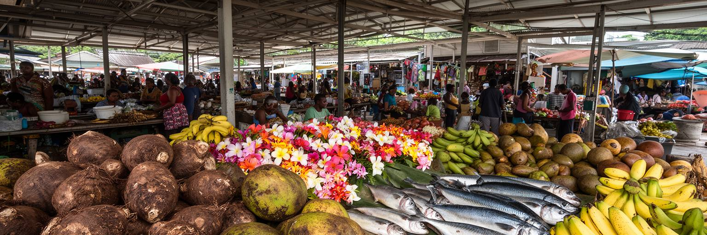
アピア市場は、サモアの食卓と家計を読む入口です。タロ、パンノキ、バナナ、ココナツ、魚、野菜、果物、花、手工芸品、弁当、日用品が並び、ウポル島内の村、サバイイからの流通、港を通る輸入品、観光客の消費が交わります。市場は単なる買い物の場ではなく、家族の近況、村の行事、価格の変化、海外から戻った人の話が行き交う情報空間でもあります。サモアの食文化は、海、畑、大家族の食事、日曜のトオナイ、教会行事、海外移民の影響を受けています。輸入食品が増えれば便利さは増しますが、生活習慣病や家計負担の問題も重くなります。市場の売り手にとって、早朝の仕入れ、雨、暑さ、保管、衛生、場所代、観光客とのやり取りは日々の労働です。アピアの経済を国のGDPだけで見ると、こうした小商いと家族労働の厚みは見えにくいです。市場では現金収入、親族の助け、村から届く作物、輸入品の値段が同時に動きます。観光客が市場を歩く時は、色鮮やかな商品だけでなく、そこにある生活の交渉を尊重する必要があります。都市整備としては、屋根、排水、トイレ、保冷、歩道、バスとの接続を良くすることが、売り手と買い手の安全を守ります。市場はアピアの胃袋であり、島国の物価と共同体の強さを毎朝映す鏡でもあります。食材を選ぶ会話の中に、首都の社会が見えます。価格の変化は家計の不安をすぐに映し、豊かな収穫は家族行事の食卓を支えます。
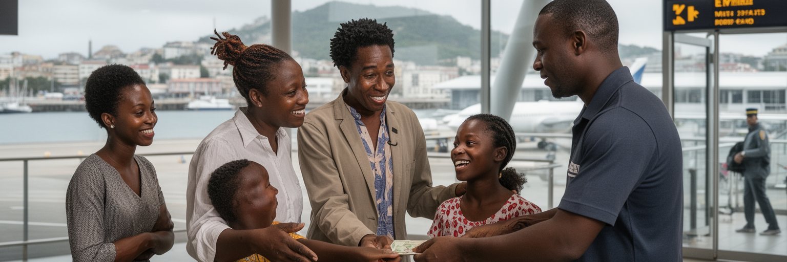
サモア社会を読むには、国内に住む人口だけでなく、ニュージーランド、オーストラリア、米国、米領サモアなどに広がる海外サモア人の存在を見る必要があります。アピアの家計、住宅、教育、教会行事、葬儀、結婚、商売には、海外からの送金や帰省が深く関わります。空港の到着ロビー、送金窓口、携帯電話、SNS、夏休みやクリスマスの帰省は、首都の時間を外の世界へ開きます。海外で働く家族は、学費、医療費、住宅の増改築、教会への寄付、村の行事を支える一方、離れて暮らす孤独や介護、子どもの養育、送金への期待という負担も生みます。アピアの住宅地には、海外で稼いだ資金で建てられた家や、帰省者を迎えるための空間が見えます。移民は成功の物語だけではなく、国内で十分な仕事を得にくい若者に、外へ出ることを現実的な選択肢として示します。首都の経済は行政と港だけでなく、国境を越えた家族の循環に支えられています。送金が増えれば消費と建設は動きますが、国内雇用の弱さを覆い隠すこともあります。アピアを歩く時、店、学校、教会、家の増築に海外の労働時間が混ざっていることを想像すると、この小さな都市の範囲が太平洋全体へ広がります。家族を結ぶ海は距離であると同時に、暮らしをつなぐ回路でもあります。帰省期に街が賑わうのは、人口以上に広い共同体が首都へ戻ってくるからです。海外での経験は、建築、服装、教育観、政治意識にも影響し、アピアの都市文化を静かに更新します。
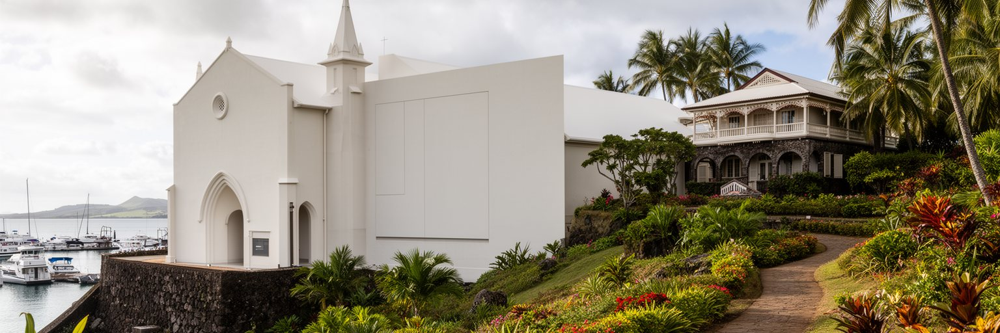
アピアの観光は、ビーチリゾートだけでは捉えられないサモアを見せます。旅行者は市場、港、教会、博物館、旧植民地期の建物、ロバート・ルイス・スティーブンソンの家と墓、近郊の滝や海岸へ向かいます。中心部を歩くと、独立国家の行政、宣教師と植民地の記憶、サモアの家族文化、港の物流、観光産業が短い距離で重なります。観光はホテル、ガイド、飲食、交通、手工芸、文化公演に収入をもたらしますが、住民の礼拝、墓地、村の土地、家庭の儀礼を消費するだけであってはなりません。写真を撮る場所、服装、日曜の過ごし方、村への入り方には敬意が必要です。アピアはリゾート地の玄関口であると同時に、サモアの政治と社会を学ぶ場所でもあります。スティーブンソンの記憶は文学的な観光資源ですが、そこだけに焦点を当てると、サモア人自身の歴史と現在が脇に置かれやすいです。市場で買い物をし、教会の時間を尊重し、港の働きを見て、村の秩序を理解する旅は、南太平洋を単なる休暇の背景から生活する社会へ変えて見せます。観光の質を高めるには、歩道、案内、公共交通、清潔な市場、文化施設の保存、地元ガイドへの利益還元が大切です。アピアの魅力は、派手な都市景観よりも、海辺の小さな首都に歴史、信仰、家族、観光が重なっている点にあります。歩く速度で見るほど、都市の厚みが現れます。短い滞在でも、礼拝の静けさと市場の賑わいを両方見ると、サモアの奥行きが近づきます。
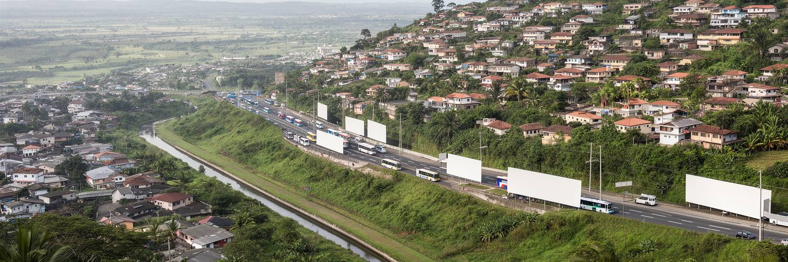
アピアの都市化は、中心部の高層化よりも、周辺の村、道路沿いの商業、住宅地の広がりとして現れます。統計上の市域は小さいですが、通勤、買い物、学校、病院、教会の実態はウポル島北岸の広い範囲へ伸びています。家族の土地に家を建てる人、賃貸住宅を探す若者、海外送金で家を改築する世帯、中心部に近い土地を商業利用する人が混在し、都市圏は行政境界より柔らかく広がります。住宅はサモアでは家族と村の関係に深く結びつき、単なる不動産商品ではありません。ですが都市化が進むと、交通渋滞、排水、廃棄物、土地紛争、家賃、若者の仕事、学校への距離が現実の課題になります。低地では洪水や高潮、丘や谷沿いでは強雨時の水流が暮らしを左右します。アピアの住宅問題を読むには、建物の数だけでなく、土地権利、家族責任、公共交通、教会、学校、災害リスクを一緒に見る必要があります。村の共同体は生活を支えますが、都市的なサービス需要に対応するには、国や自治的組織との調整が欠かせません。道路の拡幅、排水路、バス停、歩道、街灯、ゴミ収集のような小さな整備が、住宅地の暮らしを大きく変えます。アピアはまだ巨大都市ではありませんからこそ、早い段階で地形と共同体に合った都市管理を作れる可能性があります。家族の土地を尊重しながら、安全で移動しやすい首都圏を作ることが、これからの焦点になります。中心部の便利さが周辺の負担で成り立たないよう、交通と排水を先に整える視点が要ります。
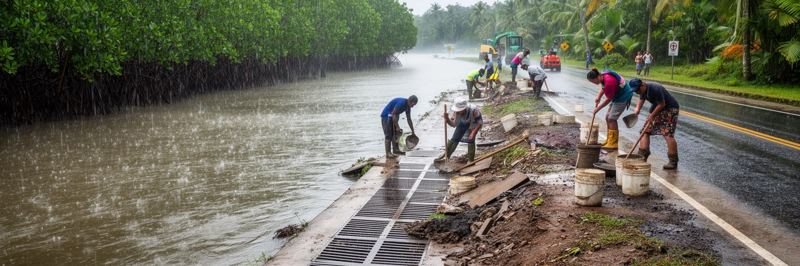
アピアは気候変動と災害リスクを日常の問題として抱える都市です。熱帯の雨、サイクロン、高潮、海面上昇、河川洪水、斜面からの水流、海岸侵食は、港、道路、市場、住宅、学校、病院に影響します。ヴァイシガノ川周辺の低地では、強い雨が短時間で都市機能を乱すことがあり、排水路の詰まりや無計画な開発は被害を強めます。サモアは国際社会で気候正義を訴える太平洋島嶼国の一つですが、その主張はアピアの街路にも具体的に現れます。港が止まれば輸入品と燃料の供給に影響し、市場が浸水すれば家計と商売が傷つき、道路が冠水すれば通勤と通学が難しくなります。気候適応は海岸堤防だけでは進みません。河川管理、雨水排水、緑地、マングローブ、建築基準、避難路、学校での防災教育、低所得世帯への支援が必要になります。小さな首都では、一つの橋や道路の機能が多くの生活に直結します。気候リスクへの備えは環境政策であると同時に、公共交通、住宅、保健、港湾、観光の政策でもあります。アピアの海辺の美しさは、守るべき景観であるだけでなく、変化する海と雨にどう適応するかを問う場所でもあります。被害を受けやすい地区を置き去りにしない適応こそ、首都の信頼を支えます。雨の日に市場へ行けることが、防災の具体的な成果になります。排水路の清掃、河川沿いの土地利用、避難情報の伝達は地味ですが、命と商売を守ります。気候政策は国際会議だけでなく、毎朝の通学路に表れます。
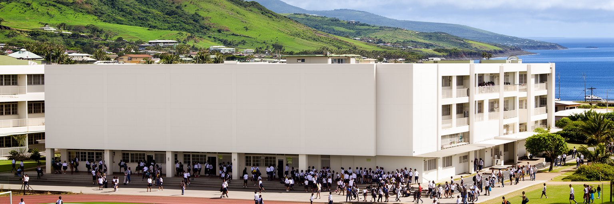
アピアには学校、専門教育、国立大学、教会系教育機関、図書館、スポーツ施設が集まり、若者がサモア国内から学びに来ます。小さな島国では人材が最も重要な資源であり、教育は公務、観光、医療、教育、通信、建設、国際機関、海外就労への道を開きます。ですが、学歴がすぐ安定した仕事に結びつくとは限りません。若者は国内で働くか、海外へ出るか、家族の土地や商売を支えるか、スポーツや芸術で道を探すかを現実的に考えます。アピアの街には、制服の学生、ラグビーやネットボールに向かう若者、教会活動、スマートフォンで外の世界とつながる時間が同居します。教育費、通学費、家族への責任、儀礼への参加、英語力、デジタル環境、ジェンダー規範は、若い世代の選択を左右します。首都に機会が集中することは、地方やサバイイとの格差にもつながります。教育政策を見る時は、学校の数だけでなく、卒業後の雇用、女性の進学、障害のある学生の移動、海外で得た技能を戻せる職場を考える必要があります。アピアの未来は、若者が島を離れるしかないと感じるか、島に残っても尊厳ある仕事と文化を作れると感じるかにかかっています。教室、スポーツ場、教会、職業訓練、起業支援がつながれば、首都は人材を外へ送り出すだけでなく、戻って来られる場所にもなります。若者の時間を都市の中心に置くことが、社会の安定を支えます。
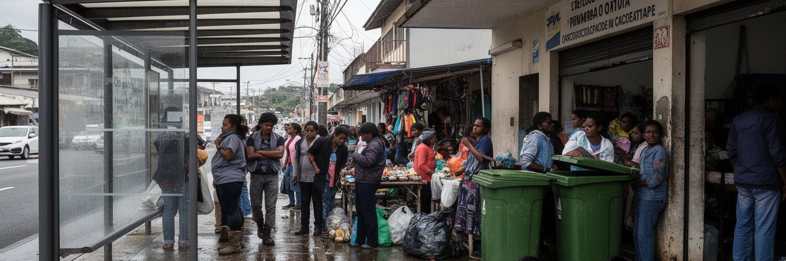
アピアの暮らしには、穏やかな島の首都という印象の奥に、都市化がもたらす社会問題があります。物価、若者の雇用、家賃、交通渋滞、生活習慣病、廃棄物、排水、家庭内暴力、ジェンダー安全、障害のある人の移動、災害時の避難は、住民にとって切実な課題になっています。大家族や教会の支えは強いですが、それだけで公共サービスの不足を補えるわけではありません。バスを待つ人、病院へ向かう家族、市場で働く女性、学校帰りの子ども、雨の中を歩く高齢者、車を持たない若者の姿は、首都の公共性を測る指標になります。アピアの中心部は歩ける距離に多くの機能がありますが、歩道の日陰、横断の安全、排水、街灯、公共トイレ、バス停の快適さはまだ重要な改善点です。観光向けの整備だけでは、住民の生活の不便は解決しません。社会問題を語る時、伝統社会の支えを理想化しすぎても、近代的な制度だけで解けると考えても不十分です。必要なのは、家族と村の力を尊重しながら、保健、住宅、交通、教育、福祉を公平に届ける仕組みです。小さな首都では、小さな公共空間の質が都市全体の信頼を左右します。雨を避ける屋根、夜の照明、診療所までの道、ゴミが流れ込まない排水路のような整備が、社会問題を和らげる現実的な入口になります。アピアの成熟は、弱い立場の人が街を使えるかに表れます。誰もが市場や教会や病院へ行ける街路を保つことが、首都の公平性を支えます。
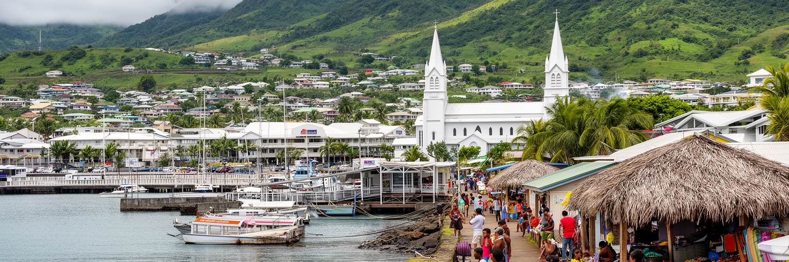
アピアを読む面白さは、都市の規模よりも関係の密度にあります。港は輸入と島外とのつながりを支え、政府機関は独立国家の判断を担い、教会は共同体の時間を整え、市場は家計と食卓を動かします。ファア・サモアは家族と村の秩序を都市へ持ち込み、海外移民と送金は首都の範囲をニュージーランド、豪州、米国、米領サモアへ広げます。海辺の穏やかな景色の背後には、洪水、高潮、物価、若者の仕事、住宅、公共サービスの課題もあります。けれども、アピアを問題だけで見るのも不十分です。この街には、太平洋島嶼国が早く独立を経験し、村の秩序と国家制度を折り合わせながら生きてきた歴史があります。観光客が市場や教会や港を歩く時、見えているのは南国の背景ではなく、政治、信仰、家族、労働、海のリスクを抱えた生活の中心です。アピアは世界の巨大都市のような経済力を持ちませんが、太平洋の気候正義、海外移民、観光経済、伝統と現代の関係を考える上で重要な都市です。読むべきものは、湾の水面、港の荷、日曜の歌声、市場の会話、丘へ上がる道路、雨の排水路、帰省する家族です。それらを一つの都市として見ると、アピアは小さな首都ではなく、広い海域の現在を凝縮した場所として立ち上がります。ゆっくり歩くほど、島国の制度と暮らしの距離の近さが分かります。小さな街路で交わされる挨拶まで含めると、この首都が国家の中心であり、家族の集まる港でもあることが見えてきます。